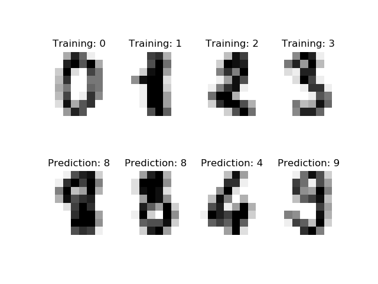
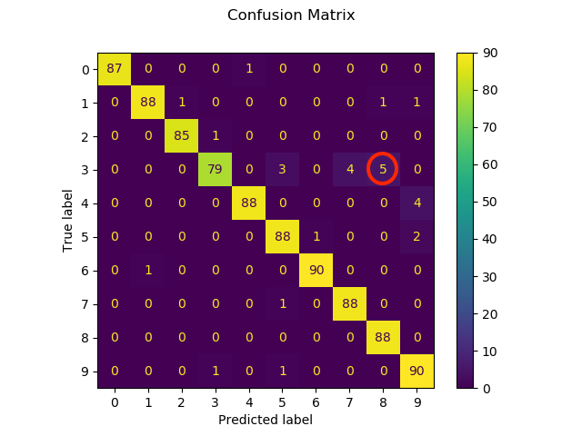

8.4 Support Vector Machine (SVM) TBD
A good explanation of the theory behind SVMs is given in (Tibshirani et al. 2013)
The support vector machine (SVM) is an extension of the support vector classifier that results from enlarging the feature space in a specific way, using kernels. We will now discuss this extension, the details of which are somewhat complex and are beyond the scope of this report. The main idea is to enlarge the feature space in order to accommodate a non-linear boundary between the classes. The kernel approach that we describe here is simply an efficient computational approach for enacting this idea.
The solution to the support vector classifier problem involves only the inner products of the observations (as opposed to the observations themselves). The inner product of two r-vectors a and b is defined as \(\langle a, b\rangle=\sum_{i=1}^{r} a_{i} b_{i}\);. Thus the inner product of two observations \(x_{i}, x_{i^{\prime}}\) is given by
\[\begin{equation} \left\langle x_{i}, x_{i^{\prime}}\right\rangle=\sum_{j=1}^{p} x_{i j} x_{i^{\prime} j} \tag{8.1} \end{equation}\]
It can be shown that
- The linear support vector classifier can be represented as:
\[\begin{equation} f(x)=\beta_{0}+\sum_{i=1}^{n} \alpha_{i}\left\langle x, x_{i}\right\rangle \tag{8.2} \end{equation}\]
where there are n parameters \(\alpha_{i}, \quad i=1, \dots, n\), one per training observation.
- To estimate the parameters \(\alpha_{1}, \ldots, \alpha_{n} \text { and } \beta_{0}\), all we need are the \(\left( \begin{array}{l}{n} \\ {2}\end{array}\right)\) inner products \(\left\langle x_{i}, x_{i^{\prime}}\right\rangle\) between all pairs of training observations. The notation \(\left( \begin{array}{c}{n} \\ {2}\end{array}\right)\) means \(n(n-1) / 2\) and gives the number of pairs among a set of \(n\) items.
Notice that in (8.2), in order to evaluate the function f(x), we need to compute the inner product between the new point x and each of the training points \(x_i\). However, it turns out that \(α_i\) is nonzero only for the support vectors in the solution—that is, if a training observation is not a support vector, then its \(α_i\) equals zero. So if S is the collection of indices of these support points, we can rewrite any solution function of the form (8.2) as
\[\begin{equation} f(x)=\beta_{0}+\sum_{i \in \mathcal{S}} \alpha_{i}\left\langle x, x_{i}\right\rangle \tag{8.3} \end{equation}\] which typically involves far fewer terms than in (8.2)
8.4.1 Kernels
To summarize, in representing the linear classifier \(f (x)\), and in computing its coefficients, all we need are inner products. Now suppose that every time the inner product (8.1) appears in the representation (8.2), or in a calculation of the solution for the support vector classifier, we replace it with a generalization of the inner product of the form
\[\begin{equation} K\left(x_{i}, x_{i^{\prime}}\right) \tag{8.4} \end{equation}\]
where K is some function that we will refer to as a kernel. A kernel is a function that quantifies the similarity of two observations. For instance, we could simply take
\[\begin{equation} K\left(x_{i}, x_{i^{\prime}}\right)=\sum_{j=1}^{p} x_{i j} x_{i^{\prime} j} \tag{8.5} \end{equation}\]
which would just give us back the support vector classifier. Equation (8.5) is known as a linear kernel because the support vector classifier is linear in the features; the linear kernel essentially quantifies the similarity of a pair of observations using Pearson (standard) correlation.
8.4.1.1 Polynomial Kernel
But one could instead choose another form for (8.4). For instance, one could replace every instance of \(\sum_{j=1}^{p} x_{i j} x_{i^{\prime} j}\) with the quantity
\[\begin{equation} K\left(x_{i}, x_{i^{\prime}}\right)=\left(1+\sum_{j=1}^{p} x_{i j} x_{i^{\prime} j}\right)^{d} \tag{8.6} \end{equation}\]
This is known as a polynomial kernel of degree d, where d is a positive integer. Using such a kernel with d > 1, instead of the standard linear kernel (8.5), in the support vector classifier algorithm leads to a much more flexible decision boundary. It essentially amounts to fitting a support vector classifier in a higher-dimensional space involving polynomials of degree d, rather than in the original feature space. When the support vector classifier is combined with a non-linear kernel such as (8.6), the resulting classifier is known as a support vector machine. Note that in this case the (non-linear) function has the form
\[\begin{equation} f(x)=\beta_{0}+\sum_{i \in \mathcal{S}} \alpha_{i} K\left(x, x_{i}\right) \tag{8.7} \end{equation}\]
The polynomial kernel shown in (8.6) is one example of a possible non-linear kernel, but alternatives abound.
8.4.1.2 Radial Kernel
Another popular choice is the radial kernel, which takes the form
\[\begin{equation} K\left(x_{i}, x_{i^{\prime}}\right)=\exp \left(-\gamma \sum_{j=1}^{p}\left(x_{i j}-x_{i^{\prime} j}\right)^{2}\right) \tag{8.8} \end{equation}\]
In (8.8), γ is a positive constant.
How does the radial kernel (8.8) actually work? If a given test observation \(x^{*}=\left(x_{1}^{*} \ldots x_{p}^{*}\right)^{T}\) is far from a training observation \(x_i\) in terms of Euclidean distance, then \(\sum_{j=1}^{p}\left(x_{j}^{*}-x_{i j}\right)^{2}\) will be large, and so \(K\left(x_{i}, x_{i^{\prime}}\right)={\exp \left(-\gamma \sum_{j=1}^{p}\left(x_{j}^{*}-x_{i j}\right)^{2}\right)}\) will be very tiny. This means that in (8.7), \(x_{i}\) will play virtually no role in \(f\left(x^{*}\right)\). Recall that the predicted class label for the test observation \(x^{*}\) is based on the sign of \(f\left(x^{*}\right)\). In other words, training observations that are far from \(x^{*}\) will play essentially no role in the predicted class label for \(x^{*}\). This means that the radial kernel has very local behaviour, in the sense that only nearby training observations have an effect on the class label of a test observation. What is the advantage of using a kernel rather than simply enlarging the feature space using functions of the original features? One advantage is computational, and it amounts to the fact that using kernels, one need only compute \(K\left(x_{i}, x_{i^{\prime}}\right)\) for \(\left( \begin{array}{l}{n} \\ {2}\end{array}\right)\) distinct pairs \(i\), \(i^{\prime}\).This can be done without explicitly working in the enlarged feature space. This is im- portant because in many applications of SVMs, the enlarged feature space is so large that computations are intractable. For some kernels, such as the radial kernel (8.8), the feature space is implicit and infinite-dimensional, so we could never do the computations there anyway!
8.4.2 Python example for SVM
Two examples are given, both take images and classify them.
8.4.2.1 SVM face recognition
The following example is given at scikit-learn.org
It uses a SVM with
- rbf kernel
- grid search for hyper parameter
- C
- gamma
- using scikit-learn GridSearchCV
- PCA to create input features
- 150 dimensions
See below some examples of the resulting classification of the algorithm

Total dataset size:
n_samples: 1288
n_features: 1850
n_classes: 7
Extracting the top 150 eigenfaces from 966 faces
done in 0.320s
Projecting the input data on the eigenfaces orthonormal basis
done in 0.013s
Fitting the classifier to the training set
done in 28.379s
Best estimator found by grid search:
SVC(C=1000.0, break_ties=False, cache_size=200, class_weight='balanced',
coef0=0.0, decision_function_shape='ovr', degree=3, gamma=0.005,
kernel='rbf', max_iter=-1, probability=False, random_state=None,
shrinking=True, tol=0.001, verbose=False)
Predicting people's names on the test set
done in 0.045s
precision recall f1-score support
Ariel Sharon 0.88 0.54 0.67 13
Colin Powell 0.80 0.87 0.83 60
Donald Rumsfeld 0.94 0.63 0.76 27
George W Bush 0.83 0.98 0.90 146
Gerhard Schroeder 0.91 0.80 0.85 25
Hugo Chavez 1.00 0.53 0.70 15
Tony Blair 0.96 0.75 0.84 36
accuracy 0.85 322
macro avg 0.90 0.73 0.79 322
weighted avg 0.86 0.85 0.84 322
Confusion matrix
[[ 7 1 0 5 0 0 0]
[ 1 52 0 7 0 0 0]
[ 0 3 17 7 0 0 0]
[ 0 3 0 143 0 0 0]
[ 0 1 0 3 20 0 1]
[ 0 4 0 2 1 8 0]
[ 0 1 1 6 1 0 27]]The python code is given below
from time import time
import logging
import matplotlib.pyplot as plt
from sklearn.model_selection import train_test_split
from sklearn.model_selection import GridSearchCV
from sklearn.datasets import fetch_lfw_people
from sklearn.metrics import classification_report
from sklearn.metrics import confusion_matrix
from sklearn.decomposition import PCA
from sklearn.svm import SVC
print(__doc__)
# Display progress logs on stdout
logging.basicConfig(level=logging.INFO, format='%(asctime)s %(message)s')
# #############################################################################
# Download the data, if not already on disk and load it as numpy arrays
lfw_people = fetch_lfw_people(min_faces_per_person=70, resize=0.4)
# introspect the images arrays to find the shapes (for plotting)
n_samples, h, w = lfw_people.images.shape
# for machine learning we use the 2 data directly (as relative pixel
# positions info is ignored by this model)
X = lfw_people.data
n_features = X.shape[1]
# the label to predict is the id of the person
y = lfw_people.target
target_names = lfw_people.target_names
n_classes = target_names.shape[0]
print("Total dataset size:")
print("n_samples: %d" % n_samples)
print("n_features: %d" % n_features)
print("n_classes: %d" % n_classes)
# #############################################################################
# Split into a training set and a test set using a stratified k fold
# split into a training and testing set
X_train, X_test, y_train, y_test = train_test_split(
X, y, test_size=0.25, random_state=42)
# #############################################################################
# Compute a PCA (eigenfaces) on the face dataset (treated as unlabeled
# dataset): unsupervised feature extraction / dimensionality reduction
n_components = 150
print("Extracting the top %d eigenfaces from %d faces"
% (n_components, X_train.shape[0]))
t0 = time()
pca = PCA(n_components=n_components, svd_solver='randomized',
whiten=True).fit(X_train)
print("done in %0.3fs" % (time() - t0))
eigenfaces = pca.components_.reshape((n_components, h, w))
print("Projecting the input data on the eigenfaces orthonormal basis")
t0 = time()
X_train_pca = pca.transform(X_train)
X_test_pca = pca.transform(X_test)
print("done in %0.3fs" % (time() - t0))
# #############################################################################
# Train a SVM classification model
print("Fitting the classifier to the training set")
t0 = time()
param_grid = {'C': [1e3, 5e3, 1e4, 5e4, 1e5],
'gamma': [0.0001, 0.0005, 0.001, 0.005, 0.01, 0.1], }
clf = GridSearchCV(
SVC(kernel='rbf', class_weight='balanced'), param_grid
)
clf = clf.fit(X_train_pca, y_train)
print("done in %0.3fs" % (time() - t0))
print("Best estimator found by grid search:")
print(clf.best_estimator_)
# #############################################################################
# Quantitative evaluation of the model quality on the test set
print("Predicting people's names on the test set")
t0 = time()
y_pred = clf.predict(X_test_pca)
print("done in %0.3fs" % (time() - t0))
print(classification_report(y_test, y_pred, target_names=target_names))
print(confusion_matrix(y_test, y_pred, labels=range(n_classes)))
# #############################################################################
# Qualitative evaluation of the predictions using matplotlib
def plot_gallery(images, titles, h, w, n_row=3, n_col=4):
"""Helper function to plot a gallery of portraits"""
plt.figure(figsize=(1.8 * n_col, 2.4 * n_row))
plt.subplots_adjust(bottom=0, left=.01, right=.99, top=.90, hspace=.35)
for i in range(n_row * n_col):
plt.subplot(n_row, n_col, i + 1)
plt.imshow(images[i].reshape((h, w)), cmap=plt.cm.gray)
plt.title(titles[i], size=12)
plt.xticks(())
plt.yticks(())
# plot the result of the prediction on a portion of the test set
def title(y_pred, y_test, target_names, i):
pred_name = target_names[y_pred[i]].rsplit(' ', 1)[-1]
true_name = target_names[y_test[i]].rsplit(' ', 1)[-1]
return 'predicted: %s\ntrue: %s' % (pred_name, true_name)
prediction_titles = [title(y_pred, y_test, target_names, i)
for i in range(y_pred.shape[0])]
plot_gallery(X_test, prediction_titles, h, w)
# plot the gallery of the most significative eigenfaces
eigenface_titles = ["eigenface %d" % i for i in range(eigenfaces.shape[0])]
plot_gallery(eigenfaces, eigenface_titles, h, w)
plt.show()Figure from Alisneaky, svg version by User:Zirguezi [CC BY-SA (https://creativecommons.org/licenses/by-sa/4.0)]
8.4.2.2 SVM Image recognition
From the scikit-learn help page an example showing how the scikit-learn can be used to recognize images of hand-written digits.
The input data are hand written numbers
Top: training data
Bottom: Prediction

The confusion matrix is given below and shows for example that a true “3” is often mistaken as a “8” (see red circle)

print(__doc__)
# Author: Gael Varoquaux <gael dot varoquaux at normalesup dot org>
# License: BSD 3 clause
# Standard scientific Python imports
import matplotlib.pyplot as plt
# Import datasets, classifiers and performance metrics
from sklearn import datasets, svm, metrics
from sklearn.model_selection import train_test_split
# The digits dataset
digits = datasets.load_digits()
# The data that we are interested in is made of 8x8 images of digits, let's
# have a look at the first 4 images, stored in the `images` attribute of the
# dataset. If we were working from image files, we could load them using
# matplotlib.pyplot.imread. Note that each image must have the same size. For these
# images, we know which digit they represent: it is given in the 'target' of
# the dataset.
_, axes = plt.subplots(2, 4)
images_and_labels = list(zip(digits.images, digits.target))
for ax, (image, label) in zip(axes[0, :], images_and_labels[:4]):
ax.set_axis_off()
ax.imshow(image, cmap=plt.cm.gray_r, interpolation='nearest')
ax.set_title('Training: %i' % label)
# To apply a classifier on this data, we need to flatten the image, to
# turn the data in a (samples, feature) matrix:
n_samples = len(digits.images)
data = digits.images.reshape((n_samples, -1))
# Create a classifier: a support vector classifier
classifier = svm.SVC(gamma=0.001)
# Split data into train and test subsets
X_train, X_test, y_train, y_test = train_test_split(
data, digits.target, test_size=0.5, shuffle=False)
# We learn the digits on the first half of the digits
classifier.fit(X_train, y_train)
# Now predict the value of the digit on the second half:
predicted = classifier.predict(X_test)
images_and_predictions = list(zip(digits.images[n_samples // 2:], predicted))
for ax, (image, prediction) in zip(axes[1, :], images_and_predictions[:4]):
ax.set_axis_off()
ax.imshow(image, cmap=plt.cm.gray_r, interpolation='nearest')
ax.set_title('Prediction: %i' % prediction)
print("Classification report for classifier %s:\n%s\n"
% (classifier, metrics.classification_report(y_test, predicted)))
disp = metrics.plot_confusion_matrix(classifier, X_test, y_test)
disp.figure_.suptitle("Confusion Matrix")
print("Confusion matrix:\n%s" % disp.confusion_matrix)
plt.show()References
Tibshirani, Robert, G James, D Witten, and T Hastie. 2013. An Introduction to Statistical Learning-with Applications in R. New York, NY: Springer.